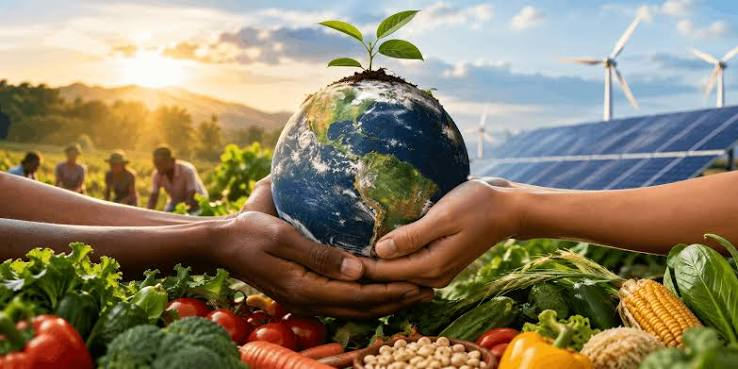
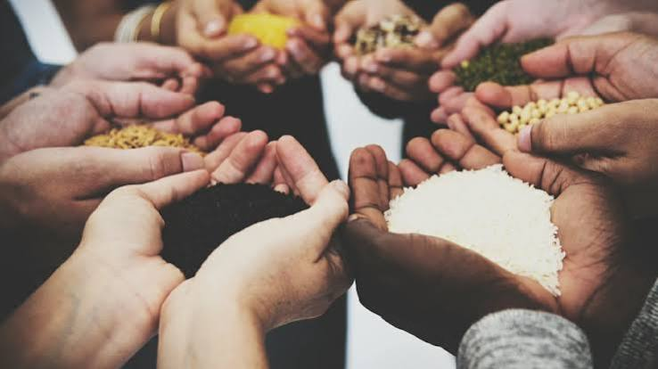
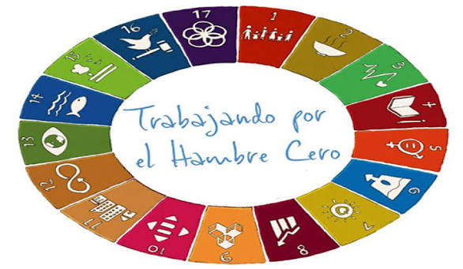

MISIÓN
Poner fin al hambre, lograr la seguridad alimentaria, mejorar la nutrición y promover la agricultura sostenible en todo el mundo a través de la cooperación internacional, el apoyo a pequeños productores y la creación de sistemas alimentarios resilientes
VISIÓN
Un mundo con "Hambre Cero" para el año 2030, donde ninguna persona sufra desnutrición, el acceso a alimentos nutritivos esté garantizado universalmente y la producción agrícola conviva en armonía con el medio ambiente de forma justa y sostenible
Fuente 1 Fuente 2